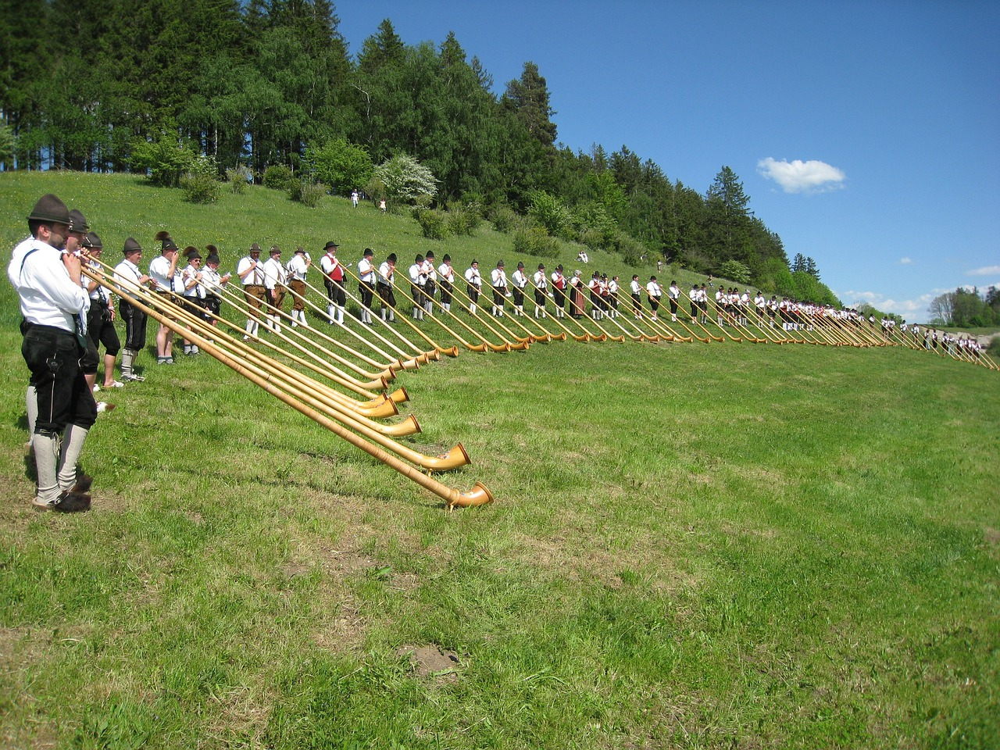

Culture and Traditions of Switzerland
Culture and Traditions of Switzerland
Switzerland, a country with a rich tapestry of cultural influences, boasts a unique blend of traditions and customs. With four official languages and a history of diverse cultural influences, Swiss culture is a harmonious blend of the German, French, Italian, and Romansh-speaking communities. The country is celebrated for its music, art, and festivals that reflect its multicultural heritage. From the rhythmic yodeling echoing in the Alps to the vibrant carnivals in the streets of Basel, Swiss culture is a dynamic and colorful spectacle. This section will delve into the heart of Swiss traditions, exploring the folklore, arts, festivals, and culinary delights that are integral to the Swiss way of life.
Languages
Switzerland's linguistic landscape is a testament to its cultural diversity. The country officially recognizes four languages: German, French, Italian, and Romansh. German is the most widely spoken, particularly in central and eastern regions, while French is predominant in the west. Italian is spoken in the southern canton of Ticino and some areas of Graubünden, where the Romansh language, an ancient language with Latin roots, is also spoken. This multilingualism is a cornerstone of Swiss identity, reflecting the country's history as a crossroads of European cultures and influences.
Swiss Arts and Music
Swiss art and music reflect the country's diverse cultural heritage. Swiss art has evolved through the centuries, from the medieval ecclesiastical works to the modernist movements influenced by global art trends. Notable Swiss artists like Paul Klee and Ferdinand Hodler have contributed significantly to the international art scene. In music, Switzerland has a rich tradition of folk music, with the Alphorn and yodeling being iconic elements. The country also has a vibrant classical and contemporary music scene, hosting world-famous events like the Montreux Jazz Festival, which attracts artists and audiences from around the globe.